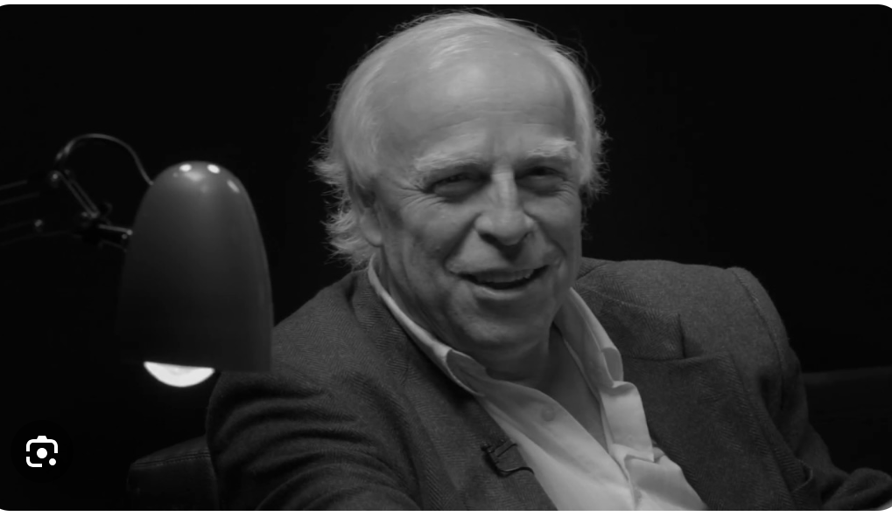
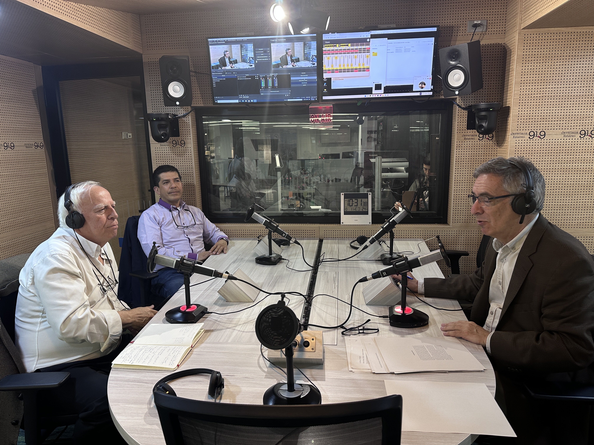

Bogotá
Ciudad, memoria y transformación.
Historia que nos une
Historia de Bogotá, Colombia y América Latina.

Trayectoria
Investigación, docencia y conversación pública.
Conferencias y encuentros
Ciudad, memoria y transformación.
Procesos, sociedades y territorios.
Historias conectadas de un continente diverso.
Libros y escritos
Cubiertas provisionales. Consulte las ediciones originales en cada ficha.

Germán y la prensa
Contacto
Conferencias, talleres y encuentros académicos.